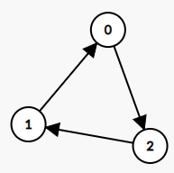

LC 997 277 1153 - Indegree And Outdegree
Table of Contents
997. Find the Town Judge
Link: Find the Town Judge
Problem Description
In a town, there are N people labelled from 1 to N. There is a rumor that one of these people is secretly the town judge.
If the town judge exists, then:
- The town judge trusts nobody.
- Everybody (except for the town judge) trusts the town judge.
- There is exactly one person that satisfies properties 1 and 2.
You are given trust, an array of pairs trust[i] = [a, b] representing that the person labelled atrusts the person labelled b.
If the town judge exists and can be identified, return the label of the town judge. Otherwise, return -1.
Example 1:
Input: N = 2, trust = [[1,2]]
Output: 2
Example 2:
Input: N = 3, trust = [[1,3],[2,3]]
Output: 3
Example 3:
Input: N = 3, trust = [[1,3],[2,3],[3,1]]
Output: -1
Example 4:
Input: N = 3, trust = [[1,2],[2,3]]
Output: -1
Example 5:
Input: N = 4, trust = [[1,3],[1,4],[2,3],[2,4],[4,3]]
Output: 3
Note:
1 <= N <= 1000trust.length <= 10000trust[i]are all differenttrust[i][0] != trust[i][1]1 <= trust[i][0], trust[i][1] <= N
Method & Code
- Judge has no outdegree.
- Judge has N - 1 indegree
/**
* 1. Judge has no outdegree.
* 2. Judge has N - 1 indegree
*
* @param N number of total people
* @param trust trust map, trust[i] = [a, b] representing that the person a trusts the person b
* @return return the label of the town judge, or return -1 otherwise
*/
public int findJudge(int N, int[][] trust) {
int[] degree = new int[N + 1];
for (int[] t : trust) {
degree[t[0]]--; // judge should have no outdegree
degree[t[1]]++; // judge should have N - 1 indegree
}
for (int i = 1; i <= N; i++) {
if (degree[i] == N - 1) {
return i;
}
}
return -1;
}
277. Find the Celebrity
Link: Find the Celebrity
Problem Description
Suppose you are at a party with n people (labeled from 0 to n - 1) and among them, there may exist one celebrity. The definition of a celebrity is that all the other n - 1 people know him/her but he/she does not know any of them.
Now you want to find out who the celebrity is or verify that there is not one. The only thing you are allowed to do is to ask questions like: “Hi, A. Do you know B?” to get information of whether A knows B. You need to find out the celebrity (or verify there is not one) by asking as few questions as possible (in the asymptotic sense).
You are given a helper function bool knows(a, b) which tells you whether A knows B. Implement a function int findCelebrity(n). There will be exactly one celebrity if he/she is in the party. Return the celebrity’s label if there is a celebrity in the party. If there is no celebrity, return -1.
Example 1:

Example 2:

Note:
- The directed graph is represented as an adjacency matrix, which is an
n x nmatrix wherea[i][j] = 1means personiknows personjwhilea[i][j] = 0means the contrary. - Remember that you won’t have direct access to the adjacency matrix.
Method & Code
Celebrity has no out degree and n indegree.
Traverse from 0 to n - 1, if current celebrity knows anyone, then this one is a possible celebrity. After this traverse, the only possible celebrity can be found. Traverse again to confirm if this celebrity has any out degree, or if exists anyone this celebrity does not know.
/**
* Celebrity has no out degree and n indegree.
* Traverse from 0 to n - 1, if current celebrity knows anyone, then this one is a possible celebrity.
* After this traverse, the only possible celebrity can be found.
* Traverse again to confirm if this celebrity has any out degree, or if exists anyone this celebrity does not know.
*
* @param n n guests
* @return celebrity's label if there is a celebrity in the party, if there is no celebrity, return -1
*/
public int findCelebrity(int n) {
int celebrity = 0; // starts at 0
for (int i = 1; i < n; i++) {
if (knows(celebrity, i)) {
celebrity = i;
}
}
for (int i = 0; i < n; i++) {
if ((i != celebrity) && (knows(celebrity, i) || !knows(i, celebrity))) {
return -1;
}
}
return celebrity;
}
1153. String Transforms Into Another String
Link: String Transforms Into Another String
Problem Description
Given two strings str1 and str2 of the same length, determine whether you can transform str1 into str2 by doing zero or more conversions.
In one conversion you can convert all occurrences of one character in str1 to any other lowercase English character.
Return true if and only if you can transform str1 into str2.
Example 1:
Input: str1 = "aabcc", str2 = "ccdee"
Output: true
Explanation: Convert 'c' to 'e' then 'b' to 'd' then 'a' to 'c'. Note that the order of conversions matter.
Example 2:
Input: str1 = "leetcode", str2 = "codeleet"
Output: false
Explanation: There is no way to transform str1 to str2.
Note:
1 <= str1.length == str2.length <= 10^4- Both
str1andstr2contain only lowercase English letters.
Method & Code
Construct a graph to store the mapping function from str1 to str2. If there is a node that has more than 1 outdegree, then return false. The outdegree is the mapping of character from str1 to str2.
Note that there should be at least one char that is not used in str1. Otherwise, the conversion is not available. The reason is that if all 26 letters are used in str1, there must be a condition that convert 2 char at 1 time.
/**
* Construct a graph to store the mapping function from str1 to str2.
* If there is a node that has more than 1 outdegree, then return false.
* Note that there should be at least one char that is not used in str1. Otherwise, the conversion is not available.
* The reason is that if all 26 letters are used in str1, there must be a condition that convert 2 char at 1 time.
*
* @param s1 first given string
* @param s2 second given string
* @return true if and only if you can transform str1 into str2, false otherwise
*/
public boolean canConvert(String s1, String s2) {
/* Corner case */
if (s1.equals(s2)) {
return true;
}
HashMap<Character, Character> m = new HashMap<>();
for (int i = 0; i < s1.length(); i++) {
if (m.getOrDefault(s1.charAt(i), s2.charAt(i)) != s2.charAt(i)) {
return false;
}
m.put(s1.charAt(i), s2.charAt(i));
}
return new HashSet<>(m.values()).size() < 26; // at least one char unused to make conversion available
}